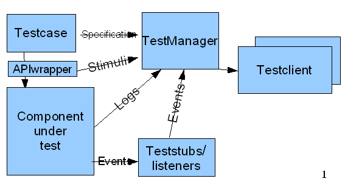

Jaccept is a extension to JUnit adding increased test information and control.
Added functionality includes:
One of the consequences of Jaccepts exposure of test execution and thereby application interaction, is that it is well suited for demonstrating application interactions which may othervise be difficult to visualize.
The test execution is monitored and controlled by a central testmanager, which may also collect addditional information from other testframework components, testfacades, systemlistener etc.
The TestManager functions as a meditor between the running tests, and any components interested in monitoring or controlling the test execution (Test clients).
The testmanager exposes an interface for accessing these information/control features. Currently 2 clients are included which use this interface.
Graphical representation of the features exposed by the TestManager.

This allows the tester to:
Compiles the generated information collected during the test run into testspecifications or testresultreports.